Cátedra 11: Mecánica Estadística y Función de Partición
Fundamentos estadísticos de la termodinámica: microestados, macroestados, la entropía de Boltzmann, y la función de partición como herramienta para calcular todas las propiedades termodinámicas.
Temas que cubre
- Microestados ($\omega$) y macroestados: cuántas formas hay de realizar un macroestado
- Entropía de Boltzmann: $S = k_B\ln\Omega$
- Maximización de la entropía: el equilibrio como estado de máxima probabilidad
- Distribución de Boltzmann: probabilidad de un estado con energía $\epsilon_i$
- Función de partición canónica: $Z = \sum_i e^{-\epsilon_i/k_BT}$
- Energía libre de Helmholtz: $F = -k_BT\ln Z$
- Derivación de magnitudes termodinámicas desde $Z$: $U$, $S$, $P$
Conceptos clave
Microestados y macroestados
Un macroestado se describe por las variables macroscópicas ($T$, $P$, $V$, $U$). Un microestado especifica el estado completo de todas las partículas. $\Omega$ es el número de microestados compatibles con el macroestado dado. El equilibrio corresponde al macroestado con mayor $\Omega$.
Entropía de Boltzmann
$S = k_B\ln\Omega$ conecta la descripción estadística (microestados) con la termodinámica (entropía). El logaritmo aparece porque queremos que la entropía sea extensiva: $\Omega$ de dos sistemas independientes se multiplica, pero sus entropías deben sumarse.
Distribución de Boltzmann
La probabilidad de encontrar el sistema en un microestado de energía $\epsilon_i$ es $p_i = e^{-\epsilon_i/k_BT}/Z$. El factor $e^{-\epsilon/k_BT}$ se llama factor de Boltzmann. A mayor temperatura, los estados de alta energía son más accesibles.
Función de partición $Z$
$Z = \sum_i e^{-\epsilon_i/k_BT}$ suma sobre todos los microestados. Es el "generador" de toda la termodinámica: diferenciando $\ln Z$ con respecto a $T$ y $V$ se obtienen $U$, $P$, $S$ y $F$. El nombre viene del alemán Zustandssumme (suma de estados).
Fórmulas fundamentales



Qué hay que entender
- La termodinámica clásica postuló la entropía; la mecánica estadística la derivó de principios más fundamentales (probabilidades de microestados).
- La función de partición $Z$ codifica toda la física del sistema. Una vez que conoces $Z$ en función de $T$ y $V$, puedes calcular cualquier propiedad termodinámica.
- El factor de Boltzmann $e^{-\epsilon/k_BT}$ tiene una interpretación física directa: la probabilidad relativa de un estado con energía $\epsilon$ comparado con el estado de energía cero.
- A $T \to 0$: solo el estado de menor energía está poblado. A $T \to \infty$: todos los estados son igualmente probables.
- La distribución de Maxwell (aux. 5) es un caso particular de la distribución de Boltzmann aplicada a los estados de traslación de las moléculas.